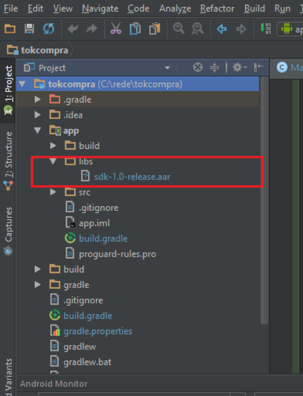
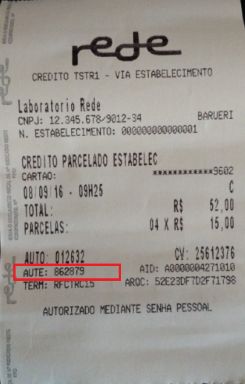

Neste codelab você irá integrar o pacote da rede para realizar um pagamento simples a partir de um aplicativo Android existente. Se você quiser aprender a fazer um novo aplicativo Android, acessa a home e veja como criar um novo projeto desde o início.
Faça a integração da biblioteca no seu projeto Android colocando ela em app/libs/

Assim que a biblioteca for colocada em seu projeto, re-sincronize o projeto em Build > Rebuild Project para que o Android Studio possa tomar ciência dos novos arquivos importados.
Defina as dependências do projeto para que na hora de compilar o código o Gradle possa capturar corretamente as informações de localização do pacote. O módulo de dependências fica na seção Gradle Scrips dentro do módulo build.gradle
Adicione a dependência do arquivo aar como descrito abaixo:
dependencies {
..
compile(name: 'sdk-1.0-release', ext: 'aar')
..
}Se você já usou o SDK da Poynt, o nome das classes e a forma como elas se comportam são os mesmos. Atente-se em utilizar os pacotes da Rede para este codelab e para seus projetos reais:
import rede.smartrede.sdk.FlexTipoPagamento;
import rede.smartrede.sdk.Intents;
import rede.smartrede.sdk.Payment;
import rede.smartrede.sdk.PaymentStatus;Neste exemplo temos uma View do tipo Button na tela que quando pressionado, dispara a solicitação de estorno. O seu código para solicitação de estorno deve ser como este:
public void onReversal() {
try {
Intent reversal = new Intent(Intents.REVERSAL_PAYMENT);
startActivityForResult(reversal, 3);
} catch (ActivityNotFoundException ex) {
Log.e("TokCompra", "Poynt Payment Activity not found - did you install PoyntServices?");
}
}Ao chamar o método de estorno, uma tela será aberta para informar o AUTE do comprovante de pagamento. Tenha ele em mãos para realizar a operação de forma correta:

No passo anterior, iniciamos uma activity com método startActivityForResult(). Toda vez que esse método é inicializado, a resposta é devolvida no método onActivityResult. Para receber a resposta, basta sobrescrever o método na activity.
@Override
public void onActivityResult(int requestCode, int resultCode, Intent data) {
if(resultCode == Activity.RESULT_OK) {
String s = "";
if(data != null){
Payment = data.getParcelableExtra(Intents.INTENT_EXTRAS_PAYMENT);
s = "Estorno de pagamento: \n";
s = "Valor: " payment.getAmount() + "\n";
if(payment.getStatus().equals(PaymentStatus.CANCELED)) {
s = s + "AUTORIZADO";
} else if(payment.getStatus().equals(PaymentStatus.CANCELED)) {
s = s + "CANCELADO";
}
Toast.makeText(this, s, Toast.LENGTH_SHORT).show();
}
} else {
Toast.makeText(this, "Estorno cancelado", Toast.LENGTH_SHORT).show();
}
}